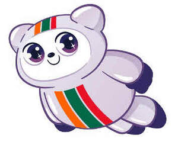

Trade Mark Journal No.2025/024 13 June 2025
UK00004211874 30 May 2025 (25,28,30,35,41)

- Class 25
- Clothing; footwear; headgear; t-shirts; hats; caps; socks.
- Class 28
- Toys; mascot dolls; mascot toys; plush toys; ornaments; games and playthings; electronic playthings; construction toys; drawing toys; toy model kits; toy dough; toy mould and moulding compounds and materials; toy putty; free-flowing toy gel; toy food; toy cookware; toy baking sets; sand toys; play sand [playthings]; sand boxes [plaything]; arts and crafts kits [toys or playthings]; musical playthings; video game apparatus; gymnastic and sporting articles; decorations for Christmas trees; soft toys; toys for babies; doll playsets; board games; chess games; puzzles; toy strollers; play gyms for babies.
- Class 30
- Coffee; tea; cocoa; sugar; rice; tapioca; sago; pasta; artificial coffee; flour and preparations made from cereals; bread; pastry; confectionery; ices; pastries, cakes, tarts and biscuits; honey, treacle; yeast; baking-powder; salt, mustard; vinegar; spices; ice; bakery desserts, tarts and pies; macaroni, rice and pasta salad; condiments, namely ketchup, mustard, relish, pickle, pickle relish, barbeque sauce, hot sauce, chili sauce, cheese sauce and mayonnaise; filled rolls and sandwiches; hot dogs; frozen, prepared or packaged meals consisting primarily of rice, noodles and/or pasta; entrees namely frozen, prepared or packaged meals consisting primarily of rice, noodles and/or pasta; rice balls; steamed buns; grilled foods namely taquitos; taquitos and sandwich wraps; pizza; bakery products, including pies, bread, focaccia, cookies, cakes, brownies, muffins and donuts; chocolate; chocolate covered nuts, snacks and bread products; sweets, candy bars and chewing gum; coffee and tea-based beverages; hot chocolate; yoghurt bars; snack chips and crackers made of corn, wheat and grain; salsa; ice cream; savoury snacks; cereal bars and energy bars; snack mix consisting primarily of crackers, pretzels, candied nuts and/or popped popcorn; cereal, corn grain, granola, rice and wheat based snack foods.
- Class 35
- Retail services relating to food, drinks, personal care products, health and beauty products, first aid and medicinal products; retail services relating to household cleaning products, automotive maintenance and cleaning products, pet care and food products, stationery and office supplies, tobacco products and accessories, telecommunications products, personal electronic devices and accessories, electronic media, batteries, flashlights, eyewear, clothing, footwear, headgear, umbrellas, toys, sporting goods, gift wrap, books, maps, magazines and newspapers; business advisory services relating to franchising; services pertaining to administrative counselling in relation to the operation of retail stores; retail services connected with the sale of gasoline; convenience store services, namely retail services connected with the sale of foods and beverages; retail convenience store services connected with the sale of food and beverage products for consumption on or off the premises.
- Class 41
- Entertainment services; entertainment services in the nature of performances and live appearances; entertainment services in the nature of performances and live appearances by a costumed mascot character; arranging and conducting of live entertainment events; organisation of events for entertainment purposes; providing electronic publications; publication of texts, newsletters and books; production of podcasts and videos.
7-Eleven International, LLC
Representative: Bird & Bird LLP